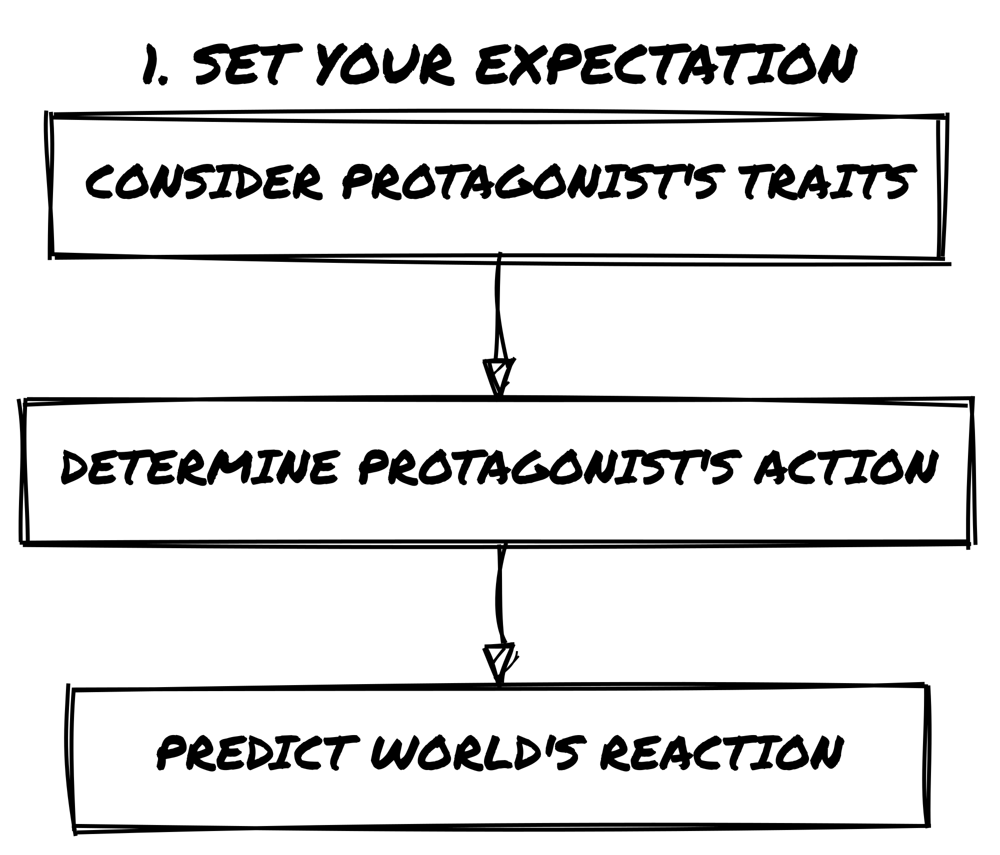
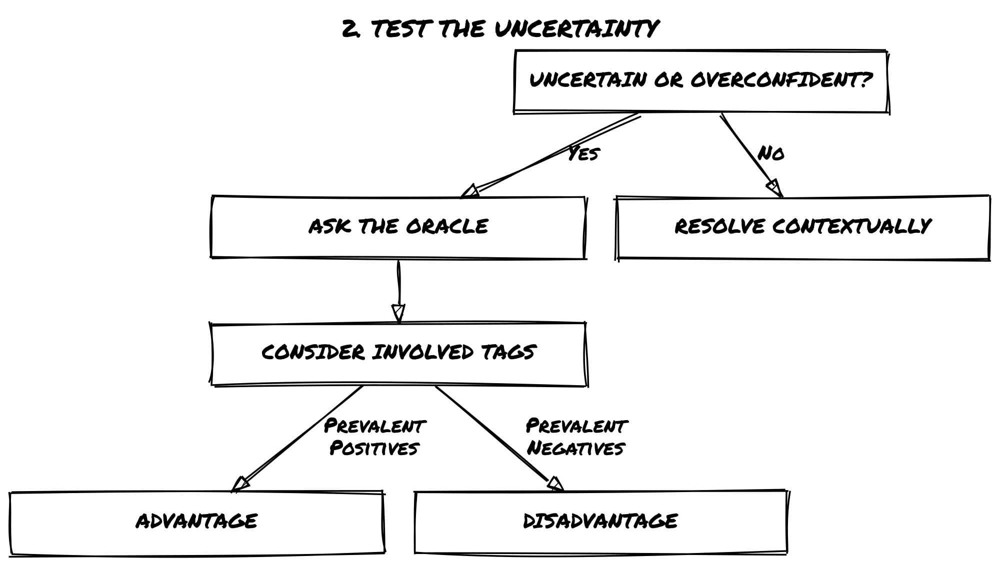
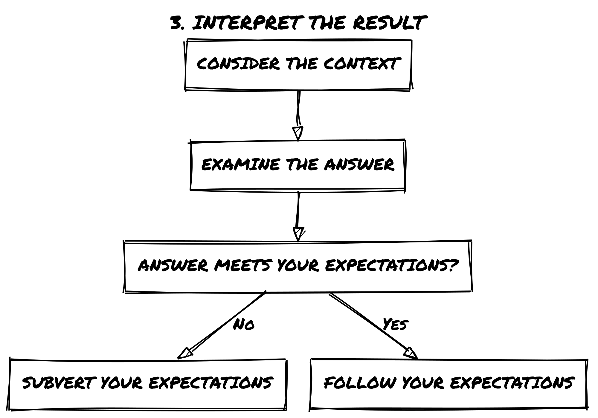
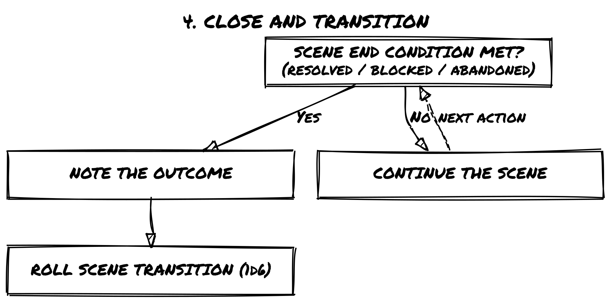
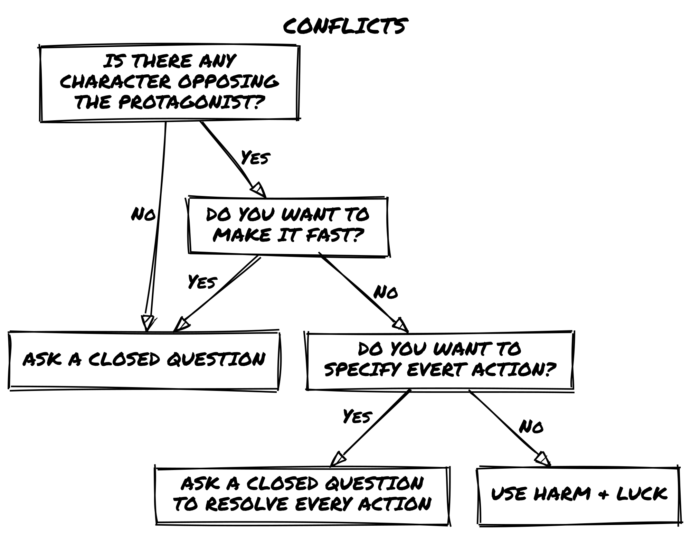
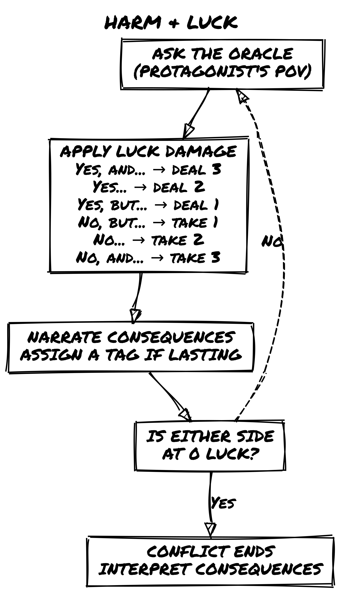
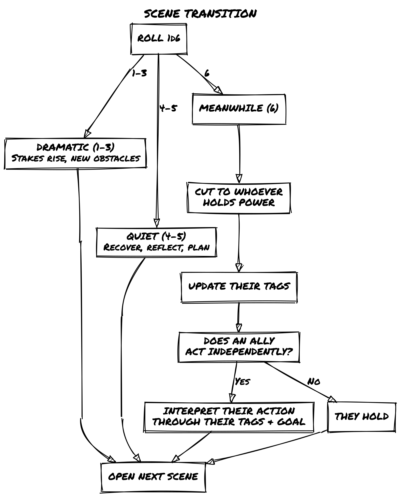
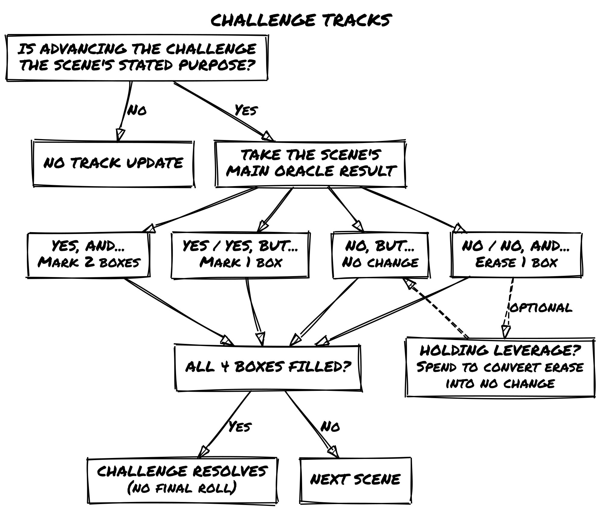

Loner 4e: Core Rules
Loner 4e: Core Rules
Introduction
Loner is a minimalist solo role-playing game built around a single character, your Protagonist, moving through a story shaped by your choices and an unpredictable Oracle.
Instead of following a script or picking from pre-set outcomes, you ask the Oracle closed questions, interpret its answers, and let the unexpected pull the story in directions you did not plan. The game is improvisational, emergent, and surprising.
Every session of Loner has structure and room for surprise. You make choices, test assumptions, and occasionally find that the world had different plans. When that happens, you adapt.
Loner follows these design principles:
- Portable – All you need is a few six-sided dice, a way to write things down, and your imagination.
- Rules-Light – With just one core mechanic, Loner is easy to learn and quick to play.
- Tag-Based – Characters, events, and objects are defined descriptively rather than numerically.
- Emergent & Open-Ended – There are no pre-written stories; every session generates its own narrative.
Loner is designed for fast storytelling without tactical complexity or number crunching. You can play as a lone wanderer in a ruined world, a spy on the run, or a rogue AI in cyberspace. The system bends to whatever story you want to tell.
What is a role-playing game?
In a role-playing game, you play a character. The choices you make determine what happens to them and to the world around them.
If you have never played one before: you are not reading a story someone else wrote. You are building it as you play. Your character has a goal, abilities, and a world to move through. What happens next is not predetermined; it depends on what you do and, in Loner, on what the Oracle reveals.
Traditional role-playing games are played with a group and a Game Master, someone who prepares the world and referees what happens. Loner removes both requirements. You play alone. The Oracle, a simple dice mechanic, replaces a Game Master’s unpredictability. You are player and storyteller both.
No prior experience is needed. This is a fine place to start.
How Loner Is Different
Unlike gamebooks with branching paths or scripted adventures, Loner has no pre-written story. There is no narrative someone else designed. You build it, guided by your character’s traits and shaped by the Oracle’s answers.
The world is not fixed from the start. It responds to what your character does, who they are, and what they want. The Oracle introduces uncertainty where you might otherwise just decide the answer yourself.
Playing Together
Loner is built for solo play, but its mechanics extend naturally to small groups.
Without a Game Master, each player runs their own Protagonist and consults the Oracle for their own actions. The player who asks the question interprets the result. A rotating or fixed facilitator keeps things moving and settles disputes when interpretations conflict.
With a Game Master, the players consult the Oracle and the GM interprets the results, presenting the world’s reactions and driving the fiction forward. The GM does not roll.
For full procedures covering shared scenes, group conflicts, the Twist Counter across multiple players, and everything else that comes up at the table, see Ensemble, a standalone game built on the same engine as Loner, designed for group play.
Using Ensemble Content in Loner
Settings, oracle tables, NPCs, and Tags from Ensemble games work in Loner with these adjustments:
- Dice: Replace Ensemble’s dice pool with Loner’s single Chance Die and Risk Die pair. Advantages and disadvantages still apply; they cap at one die each instead of building a pool.
- Twist Counter: The counter and its threshold of 3 carry over, but use Loner’s trigger: doubles add 1, not every Yes, but… result.
- Luck: Ensemble scales NPC Luck from 3 to 10 by threat level. Reset imported NPCs to 6; in Loner, their menace lives in their tags.
Ignore group procedures (scene host rotation, collective framing). Use Loner’s solo oracle as normal.
Playing Safely
When you play alone, you control what happens. Loner lets you explore any story, but you also set the limits. Some themes can be intense or emotionally heavy. If they are, adjust as needed. Take a break, change the focus, or step away. The game is a tool for telling stories you want to tell; it should not make you feel distressed.
In solo play, no formal safety tools are needed. One rule covers it: if a scene makes you uncomfortable, change it. Rewind, reframe, or stop entirely. In group play, coordinate with the other players about limits before you begin.
Loner is meant to be enjoyed. Nothing here requires you to push through something that does not feel right.
What You Need to Play
To play Loner, you only need a few basic tools:
- 4 six-sided dice (d6s) – two pairs of different colors.
- Paper and writing tools – a scrap sheet and a pencil work fine, but index cards or sticky notes can help.
- Character sheet – use the one provided at the back of this book or a simple notecard.
- Notebook (optional but useful) – Loner isn’t a journaling game, but you might want to jot down notes about characters, locations, and ongoing storylines. This helps keep things consistent when you play more than once.
That’s it! There is no rulebook to memorize, no stacks of materials, just a handful of dice and your imagination.
What’s New in the Fourth Edition
Players familiar with previous editions will find the oracle, the tag system, and the Twist Counter unchanged. The fourth edition adds procedures that support longer stories and richer worlds.
- Scene structure
- Build the Setup: A 5W+H table (Who, What, When, Where, Why, How) for assembling a mission premise before the first scene, as an alternative to dropping directly into a Dramatic Scene.
- Framing a Scene: Establish where you are, who is present, and your scene goal before the first oracle question.
- Closing a Scene: Three explicit conditions for ending a scene: goal resolved, goal blocked, or goal abandoned.
- Narrative tools
- Relationships: Connections with NPCs earn tags through play, functioning like any other tag for Advantage or Disadvantage.
- Dead Ends: A procedure for when a narrative path collapses: one oracle question to find a new angle, then a shift of scale.
- Meanwhile: Expanded from a single table entry to a full procedure: cut to whoever holds power, update their tags, then ask whether an ally acts independently.
- When to Promote a Tag to a Character: A rule of thumb for deciding when a recurring element earns its own character sheet.
- Conflict mechanics
- Twist Intensity: Guidance for calibrating how hard a Twist lands based on the fiction’s accumulated pressure. Found in Conflict & Consequences → The Twist.
- Long-term mechanics (optional modules)
- Challenge Tracks: A progress tracker for goals that span multiple scenes or sessions.
- Leverage: Bank a Yes, and… result to spend as Advantage or to soften a later No.
- Status Track: A three-box consequence track for lasting harm, with escalating tags for physical, social, and psychological pressure.
- The Living World: A post-adventure procedure for updating NPCs, Locations, and Events so the world remembers what happened.
- Appendix
- Your First Loner Session (Appendix A): A step-by-step walkthrough of a complete session, with a worked example, for players new to solo play.
- Upgrading to Fourth Edition (Appendix B): A guide for third edition and Geared Towards Loner players on adopting new procedures and introducing the optional modules.
- Step Dice Oracle (Appendix D): A variant resolution system using polyhedral dice (d8/d10) for players who prefer a wider probability range.
Characters & World
Choose a Genre or Setting
Every Loner adventure takes place in an imaginary world. You get to choose the world before you play. This can be:
- A setting from your favorite TV series, book, or RPG.
- A genre you already love or one you’re curious to explore.
- A world built from randomly generated tropes.
If you need inspiration:
- Look up trope lists (search online for common themes in fiction).
- Use the Adventure Packs available for the Loner system.
- Let your character shape the world: define them first, then build the setting around them.
There’s no right or wrong way to do it. The story will take shape as you play, whether you start with the world or the character.
Create Your Protagonist
Your character, the Protagonist, is the most important part of your story. They don’t have statistics; instead, they are defined by descriptive traits that shape how they interact with the world.
Step-by-Step Character Creation
- Choose a Name – Pick a name that fits the tone and setting of your story.
- Define a Concept – Summarize your character in a short phrase.
- Select Two Skills – Unique abilities or expertise.
- Choose a Frailty – A weakness, flaw, or personal struggle. Its effect depends on the fiction: the same Frailty that hinders in one scene may help in another.
- Pick Two Pieces of Gear – Specialized equipment relevant to the setting.
- Set a Goal & Motive – Define what your Protagonist is trying to achieve and why.
- Identify a Nemesis – A rival, enemy, or opposing force. Optional at character creation, could emerge directly from play.
- Start with 6 Luck – It’s your ability to avoid failure and resets after conflicts.
What Makes a Good Concept?
A Concept is like a label for your character. It tells you what they are in just one sentence. The best concepts are evocative and concise, giving an immediate sense of personality, role, or history.
Good examples:
- Cunning Bounty Hunter: suggests expertise in tracking and deception.
- Haunted Scholar: suggests knowledge, but also a burden.
- Exiled Warlock: hints at power and a troubled past.
Avoid:
- Strong Fighter: too generic. What makes them unique?
- Heroic Person: not specific enough. What do they actually do?
- Jack of All Trades: vague, doesn’t provide a strong identity.
Think of the Concept as your elevator pitch: it should tell you, at a glance, who this character is.
What Makes a Good Skill?
Skills in Loner are qualitative rather than numerical. Instead of bonuses or stats, a Skill is a descriptor that grants narrative permission: it tells you what your character is capable of doing.
Good examples:
- Engine Whisperer: suggests a deep, almost intuitive understanding of mechanics.
- Shadow Walker: implies stealth and movement in darkness.
- Tactician’s Mind: allows for strategic thinking and planning.
Avoid:
- Strong: too broad; what kind of strength?
- Smart: vague; in what area?
- Combat: doesn’t indicate a specialty or style.
When choosing a Skill, ask: How does this change the way my character interacts with the world? If it’s too broad, refine it to something more specific.
Why Goal, Motive, and Nemesis Should Emerge from Play
These three elements are closely related to the story and so it’s best to choose them based on the game’s context instead of picking them from a random list.
- The Goal defines what your character is actively working toward.
- The Motive explains why they pursue it.
- The Nemesis is what stands in their way: this can be a person, an organization, or even an abstract force.
Since Loner is an emergent storytelling game, these should be chosen based on the setting, tone, and first moments of play rather than from a random generator. A Goal that comes from the fiction has weight; a Nemesis that emerges from play becomes a real antagonist rather than a named placeholder.
📌 Example
Zahra Nakajima Concept: Witty Street Cat
Skills: Streetwise, Nimble
Frailty: Merciful
Gear: Knife, Low O2 Supplement
Goal: Obtain unknown technology to save her planet
Motive: She feels responsible for her home’s survival
Nemesis: The Naturalist Order, a group that seeks to suppress technological progress
Luck: 6
Here, Zahra’s Goal and Nemesis aren’t arbitrary: they come from the world and story she inhabits. Her Motive ties into her personality, creating emotional stakes that make the story matter.
If you’re unsure about your Goal, Motive, or Nemesis, start playing! Let the first scenes shape these elements instead of deciding everything upfront.
Everything is a Character
In Loner, anything that plays a meaningful role in the story, whether a person, a spaceship, or an ancient curse, is treated like a character. This means the same descriptive approach used for your Protagonist applies to everything that matters in the game world.
Living Characters (NPCs, Foes, Organizations)
Any person, creature, or faction that has a distinct role in the story follows the same structure as the Protagonist:
- They have a Concept that defines their identity.
- They may have Skills and Frailties, just like the Protagonist.
- They may have Goals, Motives, or Nemeses.
- They interact with the world through Tags, influencing how scenes unfold.
📌 Example
Caine Trask Concept: Ruthless Lawman
Skills: Tracker, Quick Draw
Frailty: Bound by Honor
Gear: Plasma Revolver, High-End Surveillance Drone
Goal: Capture fugitives and criminals at any cost
Motive: Believes justice is absolute, no room for negotiation
Nemesis: The Shadow Syndicate, a criminal network that always slips through his fingers
Luck: 6
Non-Living Characters (Objects, Vehicles, Curses)
Not everything in Loner is alive, but if something actively influences the story, it is treated as a character. Unlike living beings:
- They have a Concept, Skills and Frailties, and may carry Gear when it fits (a ship’s stealth hull mod, a cursed blade’s scabbard).
- They don’t have Goals, Motives, or Nemeses.
- They are defined by their function and impact on the story.
- They still use Tags to shape how they are used or overcome.
- They have Luck and use it in conflicts exactly as living characters do.
📌 Example
The Century Skylark
- Concept: Spacecraft in bad shape
- Skills: Hyperjump Drive, Camouflage Circuits
- Frailty: Midlife Courier
- Luck: 6
When to Promote a Tag to a Character
Not everything needs a full character sheet. A simple rule of thumb:
- If it matters once, keep it as plain tags.
- If it keeps showing up or pushes back against the Protagonist, promote it to a character and play it by the same rules.
A safehouse used in a single scene can have tags: Hidden Entrance, Reinforced Door, Nosy Neighbors. Use them for the scene, then let them go. The distinction is not whether you write tags down; it’s whether you carry them forward. A character sheet is a persistent record, something you update between scenes, track over time, and return to when the fiction demands it. If the safehouse becomes a recurring campaign HQ that keeps getting threatened, it earns that treatment. The same logic applies to factions, vehicles, and cursed locations: tags for now, a sheet when the fiction keeps coming back to them.
Before the Adventure
You can jump straight into the game, but it’s a good idea to take a little time to set the stage. This can make your adventure more grounded and connected.
Build a Web of Connections
- Your Nemesis is an NPC – If you’ve defined a Nemesis, you’ve already created a key Non-Player Character (NPC). Write down their details separately: you’ll likely cross paths again.
- Allies and Contacts – Does your Protagonist have friends, mentors, or rivals? List them out with a short description so they can appear organically during play.
These notes are starting points. As play develops, NPCs and locations will change: relationships will earn tags, places will be marked by what happened there. The Relationships and Living World rules govern how that tracking works during and after an adventure.
Track Your World
Beyond characters, consider noting:
- Important Locations – Places that might be revisited, such as a criminal hideout, a hidden temple, or a war-torn city.
- Major Events – Significant events that shape the story, such as a rebellion or an impending disaster.
- Open Threads – Loose ends that haven’t resolved: a rumor that went nowhere, a contact who didn’t show, a question the oracle left hanging. Just a name and a word or two is enough.
These don’t have to be fully detailed: just quick notes that give you something to draw from when the story takes unexpected turns.
Playing a Scene
Start Your Game
Every great adventure begins somewhere. In Loner, you define the starting scene by deciding where your Protagonist is right now and what immediate challenge they face.
There are two main ways to begin:
1. Drop into the Action (Dramatic Scene)
Start in the middle of a tense moment: the Protagonist has a goal, faces an obstacle in the way, and feels the pressure of time. They are already escaping, fighting, negotiating, or uncovering a secret. The scene itself suggests the next logical action.
📌 Example
Your Protagonist is running through a neon-lit alley, gunfire behind them. A rival bounty hunter is closing in; do they find cover in time?
Think of the opening of Raiders of the Lost Ark: Indiana Jones is already inside the temple, dodging traps. A dramatic opening doesn’t need combat; it just needs tension, urgency, or a clear conflict to resolve.
2. Build the Setup
If you prefer structure, use the 5W+H method to assemble a premise before the first scene. Roll once on each column, or pick entries that fit the tone you want. The six answers give you the bones of a situation: Who is driving it, What needs to happen, When it needs to happen, Where (or what) the target is, Why the Protagonist cares, and How they get drawn in. Combine them, let them contradict each other, and open the first scene in the middle of it.
| D6 | Who? | What? | When? | Where? | Why? | How? |
|---|---|---|---|---|---|---|
| 1 | Authority | Rescue | Tonight | Person | Aid | Chance encounter |
| 2 | Organization | Protection | Within days | Group | Fortune | Old connection |
| 3 | Ally | Exploitation | At a planned event | Treasure | Coercion | Rumor or message |
| 4 | Mentor | Exploration | Before it closes | Location | Impulse | Capture or threat |
| 5 | Help-seeker | Escape | After a change | McGuffin | Ambition | Mishap |
| 6 | Blackmailer | Pursuit | Right now | Confession | Revenge | Object delivered |
📌 Example
Who? Mentor / What? Exploitation / When? Before it closes / Where? McGuffin / Why? Aid / How? Rumor or message
Tobias Wethern took Zahra under his wing when her parents died. That’s why she can’t say no to him now. He needs her to steal a datapad from the Leton Corporation before the site is decommissioned by end of week. A contact passed along the tip: once the site is sealed, the drive is gone for good.
Which One Should You Use?
Use a Dramatic Scene if you want to discover the story as you play. Use Build the Setup if you want a concrete premise before the first scene. You can combine both: frame the mission, then drop into the middle of it going sideways.
📌 Example
You frame a mission (steal a data drive from a rival hacker), but instead of starting at the planning stage, you drop into the action: the Protagonist is already inside the hacker’s apartment, alarms blaring.
Let the Story Unfold
Once you’ve set up the first scene, start playing.
Framing a Scene
Before you ask the oracle anything, establish the scene’s conditions.
Answer three questions in plain terms:
- Where is the Protagonist, and what does that place feel like right now?
- Who is present, or likely to become present?
- What is the Protagonist’s goal for this scene?
At first, work through them deliberately. After a few scenes, the answers come before you think to ask.
You don’t need to roll for any of this. Use what the fiction has established: the previous scene’s outcome, updated NPC tags, the Scene Transition roll that brought you here. If something is uncertain, ask the oracle one framing question before the scene begins and let the answer set the stage. A framing question must be about a fictional condition (what is already true about the situation), not about what will happen. “Is the building still guarded?” is a framing question. “Does Zahra get inside?” is not; that belongs in the scene itself.
Once you can answer all three, the scene is open. Start acting.
📌 Example: Framing a Scene
The last scene ended with Zahra on foot, pursued by corporate enforcers. Before she asks the oracle anything, she frames the next scene:
- Where: A rain-slicked transit hub, crowded with evening commuters. Cover is everywhere; exits are numerous.
- Who: Zahra, and two enforcers closing from the south entrance. Their tag is Coordinated Pursuit.
- What: Her goal is to lose the tail and find somewhere quiet to examine the stolen datapad.
All three conditions are set. She asks: “Can I disappear into the crowd before they close the distance?”
Keep the Action in Motion
A game of Loner is made up of a series of scenes. Each scene is a different moment in time where something meaningful happens.
Each scene has a short-term goal: a situation to work through, a challenge to overcome, or a question to resolve that moves the story forward.
The Scene Loop
Every scene follows a natural rhythm:
- Identify Your Expectations – What does your Protagonist want to achieve? Look at their traits, goal, and motivation to determine their action. How do you expect the world to react?
- Test the Uncertainty – If an outcome isn’t obvious (or if overconfidence tempts fate), consult the Oracle with a Yes/No question. Use Tags to determine if the Protagonist has an Advantage or Disadvantage.
- Interpret the Result – The Oracle’s answer may confirm your expectations or subvert them. How does this outcome reshape the scene? What new possibilities emerge?
- Close and Transition – When the scene ends, note the outcome and roll the Scene Transition to open the next one.
At first, you may want to follow this structure deliberately. With practice, it becomes second nature.




Identify Your Expectations
Your Protagonist’s traits, goals, and motivations shape how they interact with the world. In any given scene, you will naturally have expectations about what makes sense based on these factors.
Expectations help guide the story, but they don’t always require a roll. If an action has an obvious and logical outcome, let it happen. However, when there’s uncertainty, risk, or the chance for surprise, it’s time to test that expectation by consulting the Oracle.
When to Ask the Oracle
- If the outcome is obvious → No need to roll; the scene unfolds as expected.
- If the outcome is uncertain or risky → Ask the Oracle a Yes/No question.
- If you want an unexpected twist → Ask even when you’re fairly confident: sometimes reality doesn’t behave as expected!
The roll doesn’t test whether your protagonist can do something. It tests whether this specific situation is genuinely uncertain. When the fiction has already settled the outcome, because the character’s established competence makes it obvious, the dice have nothing to resolve. A protagonist with Expert Lockpick doesn’t roll for a standard door; the fiction already knows how that ends. The roll comes out when the lock is exceptional, the stakes reframe what success means, or something about the circumstances introduces real doubt. Competence narrows uncertainty. It doesn’t eliminate it.
📌 Example 1: No Roll Needed
Zahra sneaks into the Leton Corporation subsidiary. She knows from prior surveillance that security is lighter at night. Since this aligns with logic and expectations, the scene plays out: Zahra gets inside undetected without needing to ask the Oracle.
📌 Example 2: Asking the Oracle for Uncertainty
Zahra crawls through the ventilation ducts, expecting them to be unguarded. But what if there’s a security alarm hidden inside? That’s uncertain: so she asks the Oracle:
“Are the ducts clear of alarms?” and rolls.
📌 Example 3: Asking the Oracle for an Unexpected Twist
Zahra makes her way to the server room. She knows from a stolen security map that the door requires only a simple override, but what if she’s wrong? She asks the Oracle:
“Has the security system been left unchanged?”
The answer is No, and… The lock has been upgraded recently, requiring biometric clearance, and the real surprise? Security has just started their midnight patrol.
The Oracle
Consulting the Oracle
Whenever you face uncertainty in the story, you’ll ask the Oracle a Yes/No question and roll to determine the outcome.
What You Need
You’ll need two pairs of d6 in different colors: one color for Chance Dice (your roll for success), one for Risk Dice (the resistance).
How to Roll
Roll one Chance Die and one Risk Die, then follow these two steps.
Step 1: Compare the Dice
- Chance Die higher → Yes
- Risk Die higher → No
- Both equal → Yes, but… (+1 to the Twist Counter). Stop here; Step 2 does not apply to equal rolls.
Step 2: Check for Modifiers (only when the dice are not equal)
- Both dice ≤ 3 → add but…
- Both dice ≥ 4 → add and…
Resolution Breakdown
| Result | Outcome |
|---|---|
| Chance > Risk | Yes |
| Chance > Risk, both ≤ 3 | Yes, but… |
| Chance > Risk, both ≥ 4 | Yes, and… |
| Risk > Chance | No |
| Risk > Chance, both ≤ 3 | No, but… |
| Risk > Chance, both ≥ 4 | No, and… |
| Both equal | Yes, but… (+1 Twist Counter) |
Framing the Question
Always phrase your question so that Yes, and… is the best possible outcome. Orient the question around what the Protagonist wants, not what opposes them.
- “Does Zahra slip past the guards undetected?” (Yes, and… = past the guards, and she spots something useful)
- Not: “Is a guard blocking her path?” (Yes, and… = a guard, and reinforcements are coming)
When the question is framed this way, every result falls cleanly on a spectrum from best to worst: Yes, and… is always the outcome most worth hoping for.
📌 Example: Breaking In
Zahra wants to force open a security hatch without triggering an alarm.
She asks the Oracle: ”Does Zahra manage to force the hatch?”Rolls: Chance Die (5), Risk Die (4)
Chance Die is higher → The answer is Yes (she succeeds).
Both dice are >= 4 → Add And… (something extra goes her way).Outcome:
Zahra forces the hatch without setting off an alarm, and she also finds a map of the facility inside.
If the Risk Die had been 3 instead of 4, the answer would have been a plain Yes, without the extra benefit.
Advantage and Disadvantage
Sometimes, the situation or a Tag will grant an Advantage or Disadvantage when consulting the Oracle. This reflects how favorable or challenging the circumstances are for the Protagonist.
How It Works
- Advantage → Add an extra Chance Die (positive circumstances, useful skills, favorable conditions).
- Disadvantage → Add an extra Risk Die (hindrances, complications, difficult conditions).
- In both cases, roll all dice of that type and keep only the highest one.
- Read the result using only the kept dice: equal dice, and the but…/and… bands, are checked after discarding. A discarded die never counts toward anything.
📌 Example of Advantage
Zahra is attempting to charm a suspicious merchant into revealing illegal goods. She has the tag Smooth Talker, so she rolls with Advantage (two Chance Dice, one Risk Die).
📌 Example of Disadvantage
Zahra is hacking a corporate databank under pressure, with no relevant skills and a hardened security system working against her. She rolls with Disadvantage (two Risk Dice, one Chance Die).
Interpreting the Oracle
The Oracle provides a simple answer. Your interpretation is what makes it specific. Instead of treating the Oracle as just a mechanic, use it to drive the fiction forward.
| Answer | Outcome |
|---|---|
| Yes, and… | You get what you want + an extra advantage |
| Yes… | You succeed in your action |
| Yes, but… | You succeed, but at a cost |
| No, but… | You fail, but you gain a small compensation |
| No… | You fail |
| No, and… | You fail + something makes it worse |
Reading Modifiers
Straightforward answers (Yes/No) keep the story moving. Modifiers (but…/and…) add complexity and should push the scene in new directions. Tie the answer back to the existing fiction: NPCs, locations, unresolved threads, rather than reading it in isolation.
When a No result lands, ask what it changes, not just what it blocks. A failure that only closes a door stalls the story; one that shifts the situation, raises a new question, or forces a different approach keeps it moving. If a No closes a path entirely rather than redirecting it, see Dead Ends.
Methods for Interpreting the Oracle
Every oracle result can be read in three ways: as a measure of intensity, as a twist generator, or as a momentum shift. These are alternative approaches; use whichever fits the moment. The same result will read differently depending on which lens you apply.
📌 Example: Three Lenses on the Same Result
Scenario: Zahra is sneaking into a research facility. Question: “Does she make it inside unnoticed?” Oracle Answer: No, but…
- As Intensity: She’s seen, but only by a single distracted guard, not the entire security team.
- As a Twist: She’s caught, but the person who finds her is an old ally instead of an enemy.
- As Momentum: She’s detected, but instead of triggering an alarm, the guards begin searching, giving her a brief window to hide.
1. The Oracle as Intensity
Read the result as a measure of how well or poorly things go:
| Answer | Intensity of Outcome |
|---|---|
| Yes, and… | Major success (Overwhelming advantage, unexpected bonus) |
| Yes… | Moderate success (Standard outcome, things go as expected) |
| Yes, but… | Success with consequences (Partial victory, unintended complication) |
| No, but… | Failure with compensation (Misses the goal, but something useful happens) |
| No… | Moderate failure (Things go wrong as expected) |
| No, and… | Major failure (Catastrophic mistake, unexpected setback) |
📌 Example: Sneaking Past a Security Checkpoint
- Yes, and… → Not only does she slip past unnoticed, but she also finds an access key on the floor.
- Yes… → She gets past the checkpoint without being seen.
- Yes, but… → She gets through, but the guards start a random sweep of the area.
- No, but… → She gets caught, but the guards assume she’s just lost rather than an intruder.
- No… → She’s spotted, and the alarm is raised.
- No, and… → She’s spotted, captured, and now the security system is on full lockdown.
2. The Oracle as a Twist Generator
Let the result introduce a new element that wasn’t part of your initial expectations.
📌 Example: Zahra tries to hack into a corporate mainframe
- Yes, but… → She gains access, but the files are heavily encrypted, requiring another step.
- No, but… → She fails to hack in, but she learns that the mainframe is vulnerable to an external backdoor.
- No, and… → Not only does she fail, but she accidentally trips a silent alarm, alerting security.
3. The Oracle as Momentum Control
Read the result as a shift in scene tension: rising, falling, or holding steady.
| Answer | Scene Momentum |
|---|---|
| Yes, and… | Drives the scene forward with a major development |
| Yes… | Moves the story in a predictable direction |
| Yes, but… | Adds a complication that slows progress |
| No, but… | Shifts the focus to an alternative path |
| No… | Brings the scene to a roadblock |
| No, and… | Escalates the stakes significantly |
📌 Example: Zahra is interrogating an informant
- Yes, and… → The informant cracks immediately and spills everything, and even offers to help.
- Yes… → He gives Zahra the information she wants.
- Yes, but… → He talks, but some details are unreliable or missing.
- No, but… → He refuses to talk, but his reaction suggests he knows something crucial.
- No… → He refuses to talk completely.
- No, and… → He shuts down and alerts someone to Zahra’s presence.
The Oracle as a Fiction Driver
Don’t treat Oracle results as binary pass/fail. Use context to shape interpretation: a No, and… in combat lands differently than in a conversation. Try different methods to keep the fiction fresh.
When the Oracle Is Unclear
Sometimes the Oracle’s answer won’t make immediate sense. Instead of getting stuck, follow these steps.
How to Handle a Confusing Answer
- Don’t Overquestion It – Avoid asking too many follow-ups to force a “logical” result. Three Yes/No questions is a useful guideline: if you’re still unsure after that, move on rather than drilling deeper.
- Reframe the Answer – Think about the broader situation. Try completing the sentence: “If it is not [the literal reading], then it is…” and follow where that leads. Could this result introduce a hidden complication or suggest a deeper truth?
- Use an Open-Ended Question – If you’re still lost, roll on an inspiration table or ask something like:
- “What unexpected factor is at play?”
- “What does this reveal that I didn’t consider?”
- “What unexpected factor is at play?”
- Default to “Yes, but…” – If nothing else fits, treat the response as Yes, but… and introduce a minor complication that makes the answer work.
📌 Example: Dealing with a Strange Answer
Question: “Is the informant still at the bar?” Oracle Answer: No, and…
This doesn’t make sense at first: why would they suddenly leave? Possible reframes:
- Maybe someone tipped them off?
- Maybe they were kidnapped?
- Maybe “No, and…” means they were never a reliable contact to begin with?
Final Interpretation: The informant is gone, and the bartender nervously avoids eye contact, suggesting foul play. The story moves forward with a new layer of intrigue.
If the oracle’s answer is clear but the path forward has closed entirely, see Dead Ends.
Open-Ended Questions & Inspiration
Not all questions can be answered with a simple Yes or No. Use these tables when:
- The oracle returns a but… or and… modifier and you can’t see what it means in context
- A scene opens and you have no clear sense of what’s present or what the mood is
- You want to expand a vague oracle answer into something concrete
- The story has stalled and you need a prompt to find the next thread
Roll 2d6 on each table below (Verb, Noun, and optionally Adjective): one die for the row, one for the column. Roll at least a Verb and a Noun. Add an Adjective for more nuance.
Read the result back into the existing fiction. Look at what is already happening in the story and ask what the prompt illuminates there. The prompt is a lens, not an instruction to invent something new from scratch. “Destroy + argument” doesn’t mean a new subplot appears; it means something already present in the scene involves destruction or a breaking point. Interpret freely, but root the interpretation in what already exists.
| Verbs | 1 | 2 | 3 | 4 | 5 | 6 |
|---|---|---|---|---|---|---|
| 1 | inject | pass | own | divide | bury | borrow |
| 2 | continue | learn | ask | multiply | receive | imagine |
| 3 | develop | behave | replace | damage | collect | turn |
| 4 | share | hand | play | explain | improve | cough |
| 5 | face | expand | found | gather | prefer | belong |
| 6 | trip | want | miss | dry | employ | destroy |
| Adjectives | 1 | 2 | 3 | 4 | 5 | 6 |
|---|---|---|---|---|---|---|
| 1 | frequent | faulty | obscene | scarce | rigid | long-term |
| 2 | ethereal | sophisticated | rightful | knowledgeable | astonishing | ordinary |
| 3 | descriptive | insidious | poor | proud | reflective | amusing |
| 4 | silky | worthless | fixed | loose | willing | cold |
| 5 | quiet | stormy | spooky | delirious | innate | late |
| 6 | magnificent | arrogant | unhealthy | enormous | truculent | charming |
| Nouns | 1 | 2 | 3 | 4 | 5 | 6 |
|---|---|---|---|---|---|---|
| 1 | cause | stage | change | verse | thrill | spot |
| 2 | front | event | home | bag | measure | birth |
| 3 | prose | motion | trade | memory | chance | drop |
| 4 | instrument | friend | talk | liquid | fact | price |
| 5 | word | morning | edge | room | system | camp |
| 6 | key | income | use | humor | statement | argument |
📌 Example: Seeking Help in Desperation
Question: “Does Zahra have friends who can help her against the hitman?” Rolls: 2-4 (multiply) and 3-2 (motion) → Multiply Motion
Zahra must move quickly to reach a trusted contact before it’s too late. She rushes to Melina Reade, an underworld hacker who might provide crucial intel: but getting there won’t be easy.
Dead Ends
Sometimes a lead goes cold, a key contact is gone, or a line of inquiry simply stops producing anything to act on. This is a dead end, not a failed roll, but a structural collapse in the path forward.
Dead ends come from two directions. The most common is external: the world closes a door. A contact dies, evidence is destroyed, a location is sealed. But a dead end can also be the Protagonist’s own doing: a choice that burned a bridge, a disclosure that made an ally into a liability, an action that foreclosed the route they intended to take. The procedure is the same in either case: the closed path is closed. Don’t reopen it by asking more questions about it.
When you recognize a dead end, do not continue asking questions about the closed path. Instead, reframe.
Ask the oracle a single question in this form: “Does something or someone point toward a new way forward?”
- On a Yes of any kind, introduce a new element: an overlooked detail, an unexpected contact, an object that suggests a direction. It need not be obvious. It need only exist.
- On a No, but…, the path remains closed, but the Protagonist understands something about why. That understanding may suggest a direction, or it may simply be closure. Either way, it is a piece of the story.
- On a No or No, and…, the dead end holds. Reframe: pull back to the Protagonist’s goal and ask what other approach, person, or location might serve it. Start a new scene from there.
If a second dead end follows on the same investigation thread, do not ask the same reframe question again. Instead, reframe entirely: something about the investigation itself is blocked, not just the current angle. Pull back to the goal, to the world, to what the Protagonist knows for certain, and build the next scene from there. Consecutive dead ends are the story’s way of telling you the approach needs to change, not just the path.
A dead end is not failure. It is the story telling you to look somewhere else.
📌 Example: Hitting a Dead End
Zahra has been tracking a courier who supposedly knows where the corporation stores its off-books data. The last oracle answer: the courier died in an accident three days ago.
Path closed. She asks: “Does something or someone point toward a new way forward?”
Yes, but…: There’s a lead, but it’s indirect: the courier’s locker at the transit terminal hasn’t been cleared. Whatever he was carrying might still be there, but so might someone watching it.
Zahra shifts her approach and opens a new scene at the terminal.
Conflict & Consequences
The Twist
A Twist is a development that changes something larger than the current action: the situation, the goal, or who is in play. It does not come from a single bad roll. It accumulates.
The Twist Counter tracks rising tension. Every time you roll doubles, add 1. When the counter reaches 3, a Twist occurs: roll 2d6 on the table below and reset the counter to 0. Roll one die for the Subject column and one die for the Action column; combine the two results into a single beat.
If the counter is below 3 when doubles appear, treat the result as “Yes, but…” as normal.
| D6 | Subject | Action |
|---|---|---|
| 1 | A third party | Appears |
| 2 | The Protagonist | Alters the location |
| 3 | An encounter | Helps the Protagonist |
| 4 | A physical event | Hinders the Protagonist |
| 5 | An emotional event | Changes the goal |
| 6 | An object | Ends the scene |
Each two-word result is a beat: a compressed prompt that gets its meaning from what the fiction has already established. Interpret it within the context of the current scene.
Twist Intensity
When a Twist occurs, read the fiction before you roll. If the scene has been building pressure (failed rolls, unresolved complications, the protagonist cornered or bleeding), the Twist lands hard. Interpret the result at its most disruptive. If the scene has been relatively clean, the Twist is a shift, not a collapse. The table is the same. The weight isn’t.
High pressure: Zahra is inside the facility, Luck at 3, one guard already alerted, the exit route compromised. A Twist here is a crisis: the building locks down, a second team arrives, someone she trusted appears on the wrong side. Clean state: Zahra is in a quiet scene gathering intel, nothing has gone wrong. The same Twist result is a complication: a contact is harder to reach than expected, a piece of information turns out to be outdated. Read the room, then read the table.
📌 Example: A Ticking Tension
Zahra is trying to decrypt stolen files to uncover evidence against a powerful corporation. She asks the Oracle:
“Do the files contain evidence of illegal activities?” Rolls: Chance Die (4), Risk Die (4) → Doubles!
The answer is “Yes, but…” → The files do contain illegal activity… +1 to the Twist Counter (which was already at 2) → The Twist triggers!
Twist Triggered: The counter resets to 0. Roll 2d6 on the Twist Table…
Twist Roll: (1, 5) → “A third party” + “Changes the goal”
Interpretation: Zahra now has the evidence, but suddenly a corporate agent contacts her with an offer: “You can expose us… or take a deal that changes your life.”
Conflicts
A Conflict occurs whenever two or more forces oppose each other, whether through combat, competition, persuasion, or resistance.
Conflicts are not limited to physical fights, they also include:
- Verbal duels (intimidation, negotiations, debates)
- Tactical contests (chases, sabotage, heists)
- Mental struggles (resisting psychic influence, enduring torture)
- Vehicle battles (dogfights, ship-to-ship combat)
Ways to Resolve a Conflict
There are three approaches to resolving conflicts, depending on how much detail you want:
- Single Yes/No Question: Ask the Oracle whether the Protagonist succeeds or fails.
- Series of Yes/No Questions: Break the conflict into key actions and resolve them one by one.
- Harm & Luck System: Track Luck loss to determine when a character is overcome.

Resolving Conflicts by Key Actions
Instead of using the Harm & Luck system, you can resolve conflicts through a series of closed Oracle questions, determining the outcome of each key action in the scene.
This is the middle ground between a single-question resolution (which can feel too abrupt) and the Harm & Luck system (which may feel too structured).
How It Works
- Describe each action as a distinct moment and ask the Oracle whether it succeeds or fails.
- Use the result modifiers (but…/and…) to introduce twists and consequences.
- Let the outcome shape the next step in the scene, without tracking Luck loss.
📌 Example: A Firefight in an Abandoned Factory
Zahra is caught in a gunfight inside a dilapidated chemical plant, exchanging fire with a bounty hunter. Instead of tracking Luck, she resolves the battle action by action:
First Action: “Can I take cover behind the wall?” Yes, but…: She reaches cover, but her line of fire is obstructed (Disadvantage on the next roll).
Second Action: “I aim at the opponent, can I get the first shot in?” No, but…: She misses, but the bounty hunter is forced to move, breaking his own line of fire (Zahra gains Advantage).
Final Action: “I shoot a slag container above him. Do I hit it?” Yes, and…: The shot lands perfectly. The container crashes down, knocking the bounty hunter out cold.
Use this approach for quick, improvisational conflict resolution: chases and heists where every move shifts the stakes, tense negotiations where each argument changes the power dynamic, or battles where the environment plays a major role.
Handling Conflicts with Multiple Opponents
Not all conflicts involve a one-on-one confrontation: sometimes the Protagonist must face multiple adversaries at once. How this plays out depends on narrative context and the desired level of complexity.
Option 1: Treat the Opponents as a Single Entity
Best for mobs, minions, or coordinated groups. Treat them as a single “character” with a shared Concept and Skills (Elite Mercenary Squad, Riot Police Formation), a single Luck pool, and a Frailty related to their numbers. Fast and clean, but treats the opposition as an abstract force rather than individual threats.
Option 2: Handle Opponents as Separate Entities
Best for named antagonists, small groups with distinct roles, or rival teams. Resolve their actions individually using separate Luck pools for key adversaries and Oracle rolls to dictate group behavior (Do they fight as a unit? Do they break formation?). More tactical, but can slow play if not kept streamlined.
📌 Example: A Fight Against a Mercenary Squad
Zahra is ambushed by five corporate mercenaries. Instead of rolling for each one separately, they are treated as a single unit with the Concept Tactical Strike Team and Skill Coordinated Maneuvers.
The Oracle determines their strategy: Do they fan out to surround her? Do they immediately open fire?
As the fight unfolds:
Zahra’s attacks whittle down their shared Luck pool.
If she exploits their Fragility (poor coordination under stress), she can force them into disarray instead of fighting to the last.
When the opposition is faceless or incidental, treat them as a single entity to keep things moving. Reserve separate Luck pools for antagonists who matter to the story: named characters, faction leaders, rivals with their own tags and goals.
Harm & Luck
The Twist Counter does not apply during Harm & Luck conflicts. The Oracle still drives outcomes, but tension accumulates through Luck loss, not doubles.
When a conflict involves risk and attrition, track Luck loss to determine the outcome.
Always ask oracle questions from the Protagonist’s point of view: “Do I land the hit?”, “Do I dodge the blow?”, “Do I break free?” Success on those questions deals damage to the opponent; failure deals damage to the Protagonist. The oracle never speaks for the opponent directly; opponent actions are resolved by asking whether the Protagonist avoids or resists them.
Luck represents resilience, endurance, and fortune. It is scoped to a single conflict: it resets fully when a conflict begins and again when it ends. This applies to every character, Protagonist and NPC alike. A creature or antagonist encountered twice in the same session starts each conflict fresh. A returning antagonist from a previous adventure also starts at 6; their prior defeat is a story fact, not a depleted resource.
A conflict ends when one side reaches 0 Luck, withdraws, or the opposition dissolves. Withdrawing is always allowed, and it is never free: breaking off before 0 Luck costs something; the fiction sets the price. A condition tag, lost ground, a pursuer on your heels, an opponent who now knows your face. The reset restores Luck, never position.
A character who runs out of Luck is defeated, but what that means depends on context:
- In a brawl, they might be knocked out.
- In a verbal duel, they might concede the argument.
- In a chase, they might lose their target.
How Luck Loss Works
Use the following table to determine how much Luck damage is inflicted:
| Oracle Result | Luck Damage |
|---|---|
| Yes, and… | Deal 3 damage to opponent |
| Yes… | Deal 2 damage to opponent |
| Yes, but… | Deal 1 damage to opponent |
| No, but… | Take 1 damage from opponent |
| No… | Take 2 damage from opponent |
| No, and… | Take 3 damage from opponent |
Reaching 0 Luck means the character has lost the conflict. The story dictates the consequences: are they captured? Severely injured? Forced to retreat?
📌 Example: Alley Fight
Zahra faces a thug in an alley. The thug has the Tags Martial Artist, Hand-to-Hand Combat, Feline, and Short.
Zahra attacks with a knife. Her Nimble skill applies to close-quarters fighting (+), but the thug’s Martial Artist and Hand-to-Hand Combat make him a dangerous target (−, −). One positive against two negatives: net Disadvantage. She rolls: Chance Die (5), Risk Dice (4) and (2), keep (4) → Yes, and… (both ≥ 4): she deals 3 damage (Thug’s Luck drops from 6 to 3).
The thug throws a kick. Zahra asks: “Do I get out of the way?” His Martial Artist, Hand-to-Hand Combat, and Feline agility all work against her (−, −, −); her Nimble offsets one (net Disadvantage). She rolls: Chance Die (2), Risk Dice (3) and (2), keep (3) → No, but… (both ≤ 3): Zahra takes 1 damage (her Luck drops from 6 to 5).
Who will win? The fight continues!
Luck and Narrative Consequences
Luck does not function as a health bar. It represents a character’s ability to evade misfortune, endure pressure, and bend fate. When Luck runs out, it signals a shift in the story, not necessarily injury or death.
When a character reaches 0 Luck, stop rolling. The conflict has reached its conclusion. Ask what makes sense for the fiction:
- In combat, they might be captured or knocked unconscious.
- In a chase, they lose their target or get cornered.
- In a debate, they are outmaneuvered and must concede.
- In a heist, they trigger an alarm or leave behind crucial evidence.
📌 Example: When Luck Runs Out
Zahra is dueling a bounty hunter in the ruins of an abandoned station. The fight escalates and her Luck drops to 0.
Instead of dying outright, she is disarmed and pinned against a bulkhead. The bounty hunter drags her toward his ship; now the real challenge begins: how does she escape?
Running out of Luck is not the end. It is a turning point. Think less about “how much damage does this do?” and more about “how does this moment change the story?”
If a consequence has lasting narrative weight, assign it as a tag. A tag like Injured, Shaken, or Compromised persists beyond the conflict, shaping future scenes exactly as any other tag would.

Status Track (Optional)
The Status Track gives lasting consequences a structured form. If you prefer to handle consequences purely through narration and tags, skip this section.
The Status Track does not replace Luck. Luck operates within a single conflict and resets at the end. The Status Track records consequences that persist between conflicts, scene after scene.
When a character suffers a defeat or setback and the consequence should accumulate over time rather than resolve immediately, open a Status Track: a row of three boxes representing escalating narrative pressure.
When to fill a box: each time the Protagonist’s Luck reaches 0 in a conflict and the defeat leaves a lasting mark, fill the next empty box and assign the corresponding tag. One box per defeat, not per hit taken.
Each box corresponds to a consequence tag. Assign tags that fit the fiction and the type of conflict:
| Box | Physical | Social | Psychological |
|---|---|---|---|
| 1 | Hurt | Rattled | Unsettled |
| 2 | Injured | On the Back Foot | Shaken |
| 3 | Overcome | Humiliated | Broken |
These are examples, not a fixed list. Use whatever fits the scene.
The active tag is always the one from the most recently filled box: Hurt becomes Injured when the second box fills, not both at once. It can impose Disadvantage when relevant to the action.
The track is a single row regardless of conflict type. If defeats cross arenas, say a physical beating followed by a public humiliation, fill the next box as usual and take the tag from the column that matches the newest defeat: Hurt might become On the Back Foot. The track measures accumulated pressure, not by category; a character worn down in one arena breaks more easily in the next.
When the third box fills, the character is overcome. The story determines what that means.
Recovery: A consequence tag clears when the fiction supports it: rest, treatment, a quiet scene, or a scene explicitly framed around recovery. Clearing the current tag frees that box and restores the previous tag as active. Recovery requires narrative justification, not just time passing.
📌 Example: Status Track in Play
Zahra loses a fight with a bruiser in an alley: her Luck reaches 0. The defeat leaves a lasting mark. She fills the first box: ☑ ☐ ☐. The active tag is Hurt.
In the next scene, a Dramatic Scene, she is attacked again before she can recover. She loses again. She fills the second box: ☑ ☑ ☐. The active tag becomes Injured, replacing Hurt as the current penalty.
In a Quiet Scene, she finds shelter and treats the wound. The fiction supports it: she clears the second box. ☑ ☐ ☐, Hurt is the active tag again.
In a later social confrontation, Hurt is not relevant: the track does not impose Disadvantage. But if someone physically threatens her, Hurt applies immediately.
Closing a Scene
A scene ends when one of the following is true:
- The Protagonist’s immediate goal has been resolved: achieved or definitively failed
- The goal has been blocked: circumstances have made it impossible to pursue further in this scene
- The Protagonist abandons the goal and commits to a different course of action
When any of these conditions is met, stop asking oracle questions. Note the outcome, then roll the Scene Transition.
If none of these conditions feel clearly met, ask the oracle: “Has this scene run its course?” A Yes of any kind closes it. A No means there is still something here worth pursuing. This question is a last resort for when the fictional state is unreadable, not a routine end-of-scene check. The three conditions above should answer the question before the dice are needed.
📌 Example: Closing a Scene
Zahra is interrogating a dockworker about a shipping route. She asks three oracle questions:
- “Does he know the route?” → Yes, but…: partial information, unreliable details.
- “Can I get him to draw a map?” → No…: he refuses.
- “Will he cooperate further?” → No, and…: he bolts, and now someone else knows she’s been asking around.
The goal, extracting useful intelligence, is definitively blocked. The scene closes. Zahra notes the outcome and rolls the Scene Transition.
Scene Transition
At the end of every scene, roll 1d6.
| D6 | Scene Type | What It Means |
|---|---|---|
| 1-3 | Dramatic Scene | Raises stakes, adds new obstacles or dangers. |
| 4-5 | Quiet Scene | A pause to recover, reflect, or make plans. |
| 6 | Meanwhile | The world acts while the Protagonist is offstage. |
Types of Scenes
Dramatic Scene (1-3)
The action and tension continue. The situation worsens, new obstacles emerge, or an unexpected event forces the Protagonist to adapt.
Before the scene opens, name what’s pressing. Something external has moved: a threat has advanced, a complication has surfaced, a plan has begun to unravel. The Protagonist is responding, not initiating.
Use when:
- The antagonist makes their move.
- The environment introduces new dangers.
- The Protagonist’s plans start to unravel.
Quiet Scene (4-5)
The pressure lifts briefly. The Protagonist has initiative: they are the active agent, and the world is receptive rather than hostile.
Before the scene opens, decide what the Protagonist does with this window: rest and recover, plan and prepare, gather information, or deepen a relationship. These are the scenes where the Protagonist can change their situation rather than simply survive it. The oracle is still consulted, but the questions are about things they initiate, not crises landing on them.
Use when:
- The Protagonist needs to heal, gather intel, or plan.
- Relationships deepen or shift.
- The world reacts to past events without immediate conflict.
When pressure builds within a Quiet Scene and the fiction tips toward urgency, that moment is a turning point: the scene’s register has shifted. Close the scene and open a Dramatic Scene from there.
Meanwhile (6)
When you roll a Meanwhile scene, the world doesn’t pause. This is not atmospheric. It is procedural. Follow both steps.
1. Update the opposition. Cut to whoever holds power over the situation, the antagonist, a rival, an organization, and ask what they do next. Update their tags to reflect their action. If they were Planning the Heist, they are now Ready to Strike. If they were Searching for the Protagonist, they are now On the Trail. These updated tags are in play the moment the story returns to your Protagonist.
2. Ask the oracle: “Does an ally or wildcard act independently?” On a Yes of any kind, pick the NPC most affected by recent events. Start with whoever the fiction has placed closest to the Protagonist’s last action, the one whose situation was most directly changed by what just happened. Interpret their action through their current tags and goal: an opportunity offered, a complication introduced, a resource moved. On a No, they hold.
The Meanwhile scene is the world’s turn.
📌 Example: A Meanwhile Scene
Zahra rests at Melina’s apartment after a difficult extraction. She rolls the Scene Transition: 6: Meanwhile.
The antagonist most active against her is Tobias Wethern, currently tagged Searching for the Protagonist. Cut to Tobias. He’s made a move.
Update his tag: Searching for the Protagonist → Hired Someone to Find Her. That tag is live the moment the story returns to Zahra.
She asks the oracle: “Does an ally act independently?” Yes…: Melina, spooked by something on her terminal, has started moving assets out of the apartment without telling Zahra. Her tag updates: Trusted Hacker → Trusted Hacker, Rattled.
In the next scene, Zahra will find the apartment half-cleared. She didn’t know she was being targeted. Now the world is already moving around her.
Why the Scene Transition Roll?
The roll ensures variety: not every scene needs to be action-packed or slow-paced. A Meanwhile result keeps the world moving during the Protagonist’s offstage moments and introduces developments you may not have planned.

Challenge Tracks (Optional)
Challenge Tracks let you feel the shape of a long arc on the page. If you prefer a lighter game, skip this section entirely: resolve long-term goals through regular oracle questions and narration, as in the third edition.
Use a Challenge Track when a pursuit spans multiple scenes or sessions and a single oracle throw won’t resolve it: a vow, a long investigation, a war of attrition.
A Challenge Track is a record of what the story has already done, not a points system. It does not decide when resolution happens. Each box is a unit of fictional distance: if you can’t name what shifted in the fiction, don’t touch the track.
When you open a track, draw four empty boxes. Then play normally. When a scene is focused on this pursuit, check the track before rolling: see where you stand, and consider what a strong result would mean at this stage. Then roll, narrate what the fiction gives you, and mirror the closing result on the track.
Track: ☑ ☑ ☐ ☐. Two boxes filled: the investigation is halfway there. A Yes, and… would fill it; this scene could close the arc. A No or No, and… would erase a box and push it back. Roll knowing what hangs on the result.
If the scene was framed around something else entirely, leave the track alone: the pursuit wasn’t in focus, so nothing changed for it. If the scene contained multiple oracle rolls connected to the challenge, use the result that closed the scene. If it is unclear which result was decisive, use the one most directly bearing on the challenge.
| Oracle Result | Progress |
|---|---|
| Yes, and… | Mark 2 boxes |
| Yes / Yes, but… | Mark 1 box |
| No, but… | No change |
| No / No, and… | Erase 1 box |
When the track fills, the arc can close. You decide what that means in the fiction.
For longer arcs, open with six boxes instead of four.
A track can also run in reverse: mounting threat, an antagonist closing in, a situation worsening. The same table applies. When the fourth box fills, the pressure has become a fact in the fiction.

Multiple Active Tracks
You may have more than one Challenge Track open at the same time. Each scene mirrors only one track: the pursuit the Protagonist was actually focused on when the scene was framed. A scene about exposing the corporation doesn’t also advance a track about escaping the city, even if both are live. The track follows the fiction; it doesn’t split it.
Tracks can interact through the story without interacting mechanically. If advancing one pursuit makes another harder, let that show in how you frame the next scene, not by moving boxes the scene never touched.
📌 Example: A Challenge Track in Play
Zahra is working to expose the Leton Corporation. She opens a track: ☐ ☐ ☐ ☐
Scene 1. She frames a scene around breaching the archive server. Before rolling, she checks the track: 0/4. She is at the beginning; nothing closes yet regardless of the result. She asks: “Do I get inside undetected?” The oracle answers Yes, and…. Two boxes fill. She narrates not just success but an extra edge: she’s inside, and she found an index that maps the whole file structure. ☑ ☑ ☐ ☐
Scene 2. Corporate enforcers raid her safehouse. The scene is framed around survival, not the investigation. She leaves the track untouched: the pursuit wasn’t in focus.
Scene 3. She frames a scene around extracting the decrypted files. She checks the track: at 2/4, a strong run could close this in two more scenes. She asks: “Can I pull the files before anyone notices?” The oracle answers No, and…. She narrates what happened: the files are gone and she’s burned with Melina. Then she erases a box to mark the cost. ☑ ☐ ☐ ☐
Scene 4. She frames a scene around recovering a backup through a new contact. She checks the track: 1/4. Even a Yes, and… only gets her to 3/4; the arc won’t close here whatever happens. She asks: “Does my contact have what I need?” The oracle answers Yes, but…. She narrates: the backup exists, but it’s incomplete. One box fills. ☑ ☑ ☐ ☐
Scene 5. She frames a scene around placing the evidence with a journalist. Track is at 2/4. She checks before rolling: a Yes, and… would fill the track. She asks: “Does the journalist take the story?” The oracle answers Yes, and…. She marks two boxes, the track fills, and she narrates the arc closing: the story runs, the corporation is exposed, and the journalist’s source protection gives Zahra cover she didn’t expect. ☑ ☑ ☑ ☑
Leverage (Optional)
Leverage lets you bank a strong oracle result for later use. If you prefer a lighter game, skip this section: narrate Yes, and… results immediately as bonuses, as in the third edition.
When the oracle answers Yes, and…, you may bank that energy as Leverage. It represents narrative weight at your back: a moment where the world bent in your favor and you chose to save it.
You can hold only one Leverage at a time. When you bank it, write a short phrase describing what it is. If you are already holding Leverage and the oracle answers Yes, and… again, choose: narrate the new result immediately as a bonus, or replace the held Leverage with the new one. You cannot stack them. Leverage expires when that description no longer applies in the fiction, or when a Twist occurs. The test is whether the current moment still connects to the moment that generated it. If the story has moved elsewhere, it has already expired. In practice this rarely survives more than a scene or two, but the fiction is the judge, not the scene boundary.
Spend your Leverage in one of two ways:
- Use it as an Advantage on any future oracle roll related to the same pursuit: this follows the standard cap, so if you already have Advantage from tags or circumstances, Leverage adds nothing to the dice pool
- Convert a No or No, and… result into No, but…: failure, but not a closed door
If you are holding Leverage when a Challenge Track scene would erase a box, you may spend it: the result becomes No, but… and no box is lost.
If the Yes, and… you want to bank came from a scene that mirrors a Challenge Track, the bonus counts once: either mark two boxes and narrate the result in full, or mark one box and bank the Leverage. Marking both boxes and banking the result would spend the same good fortune twice.
Leverage is not a score. It is a single held breath.
📌 Example: Banking and Spending Leverage
Zahra asks: “Does Melina’s contact come through with access credentials?” The oracle answers Yes, and…: the contact delivers, and the credentials also cover a secondary server she hadn’t planned for.
Instead of narrating the bonus immediately, Zahra banks it as Leverage and notes: full server access credentials.
Two scenes later, she’s trying to slip past a security checkpoint into the server room. The oracle answers No. The credentials still apply here, so she spends the Leverage: the No becomes No, but…: the checkpoint blocks her, but the credentials get her through a side terminal instead.
Between Sessions
When the Adventure Ends
Every adventure reaches a natural conclusion. Common signs:
- The Protagonist has achieved (or definitively failed) their goal.
- The Protagonist has abandoned the goal and the story found no new direction.
- A major revelation has changed everything, victory, loss, or a new status quo.
- The conflict has reached a satisfying resolution.
- The story’s momentum has slowed and you’re struggling to find the next significant scene.
If you return after a break and the thread still feels live, frame a scene from where you left off. If it no longer does, treat the adventure as abandoned: run through the post-game procedures below, update what changed, and start fresh. You don’t need a narrative resolution to close the record.
Once the story concludes, reflect on how the experience has changed your Protagonist.
Post-Game Character Growth
At the end of the adventure, modify your Protagonist to reflect what they’ve learned. You may:
- Add a new Skill, Gear, or Frailty based on the events of the story.
- Introduce a new Nemesis if the adventure ended with lingering enemies.
- Modify an existing trait to show growth or transformation.
The Living World
Your Protagonist changes at the end of an adventure. So does everything around them.
For each NPC or faction who played a meaningful role, note:
- Whether the relationship has shifted, update or assign a relationship tag
- What they want now, if the adventure changed their situation
- Whether they are gone, transformed, or still in play
If an NPC or faction is gone or permanently inaccessible, any relationship tag built with them loses its fictional anchor. The tag no longer functions: there is no one to be a Trusted Informant or Sworn Enemy toward. Record the relationship in your notes as part of the story’s history, but remove it from active play. The loss itself is a story fact that may shape future scenes.
For each Location that featured in the story, note:
- What has changed there, a tag updated to reflect the fiction (Abandoned Safehouse becomes Burned to the Ground, Neutral Ground becomes Enemy Territory)
- Whether it remains accessible, dangerous, or relevant
For each Event, a revelation, a consequence, an unresolved thread, note:
- Whether it has been addressed or still hangs in the air
- What pressure it continues to exert on the world
These notes are the connective tissue between adventures. When an NPC or faction reappears, you know who they are now. When the Protagonist returns to a location, it remembers what happened there. When an old event resurfaces, it carries weight.
The world doesn’t reset between sessions. Neither should your records of it. These updated tags are not background notes. They are immediately in play the moment the next adventure begins. When an NPC or faction reappears, their current tags shape what the oracle means before the first question is asked.
A tag that’s live but not yet relevant doesn’t need to surface in the opening scene. It’s waiting, available the moment the fiction brings it to the foreground. Whether it matters early or late depends on what the next adventure is actually about.
📌 Example: Growth Through Conflict
Zahra secures the datapad and hands it over to the authorities, framing both Wethern and the Leton Corporation. Wethern is arrested, but now she has a powerful enemy working from the shadows.
Post-Game Updates:
- Gained Skill: Wannabe Hacker (Melina Reade might mentor her!)
- New Nemesis: The Leton Corporation (They won’t let this slide…)
Future Adventures
One story ends; the Protagonist’s story doesn’t have to. Use your updated character sheet to start a new session with a fresh mission tied to past events, a revenge arc or lingering consequence, or a brand-new setting that carries the same allies and enemies forward.
The Adventure Maker
The Adventure Maker helps you generate a unique world and adventure premise when you don’t have a setting in mind, want to play in an unfamiliar genre, or just need a quick framework before starting.
Generate a Setting
All tables in this section are 6×6 grids. Roll 2d6 for each result: one die for the row, one for the column.
Roll once on each of the following tables:
- Settings Table: defines the world’s broad theme or environment.
- Tones Table: determines the atmosphere and mood.
- Things Table (roll twice): introduces key elements that define the world.
Generate an Adventure Premise
Roll once on each of the following tables:
- Opposition Table: identifies the main antagonist or challenge.
- Actions Table (roll twice): determines what needs to be done.
- Things Table: adds a unique object, mystery, or event.
The adventure premise is a framework, not the initial scene. You’ll define how it starts when you begin playing.
📌 Example: Generating an Adventure
Rolls:
- Setting: Sword and Sorcery Adventure (roll: 4-6)
- Tone: Eerie and Paranormal (roll: 6-1)
- Things: Vast Empires (roll: 6-4), Different Factions (roll: 6-3)
- Opposition: Sinister Organizations (roll: 2-3)
- Actions: Seek (roll: 2-2), Uncover (roll: 2-6)
The story takes place in a mystical land of vast, crumbling empires, where hidden factions maneuver for power in the shadows. The Protagonist, a wandering mage, is on a quest to seek out ancient knowledge, but in doing so will uncover the truth about a sinister organization pulling the strings of history.
Use the Adventure Maker as a starting point, then shape the story as you play.
Table 1: Settings
| 1 | 2 | 3 | 4 | 5 | 6 | |
|---|---|---|---|---|---|---|
| 1 | Post-Apocalyptic Wasteland | High Fantasy Kingdom | Medieval War and Intrigue | Cyberpunk Megacorporation | Futuristic Space Colony | Supernatural Noir City |
| 2 | Alternate History | Pirate-Filled Seas | Wild West Frontier | Dark Fantasy Realm | Futuristic Dystopian City | Ancient Greek Mythology |
| 3 | Space Opera Adventure | Samurai-Era Japan | Zombie Survival | Superhero Metropolis | Cold War Espionage | Modern Crime Syndicate |
| 4 | Magic School for Young Mages | Horror-Filled Asylum | Epic Fantasy Quest | Cybernetic Organisms and Androids | Lovecraftian Cosmic Horrors | Sword and Sorcery Adventure |
| 5 | Urban Fantasy Underworld | Abandoned Space Station | Colonial America | Mythical Creatures and Legends | Martial Arts Action | Horror-Stricken Carnival |
| 6 | Underwater Adventure and Exploration | Jungle-Covered Planet | Steampunk Victorian Era | Time Travel Paradoxes | Intergalactic Starfighter Battles | Survival in a Savage Land |
Table 2: Tones
| 1 | 2 | 3 | 4 | 5 | 6 | |
|---|---|---|---|---|---|---|
| 1 | Dark and brooding | Melancholic and poetic | Lighthearted and humorous | Quirky and absurd | Gritty and realistic | Violent and brutal |
| 2 | Epic and grandiose | Majestic and inspiring | Suspenseful and thrilling | Fast-paced and chaotic | Mysterious and enigmatic | Philosophical and introspective |
| 3 | Action-packed and adventurous | Heroic and daring | Romantic and whimsical | Tragic and melancholic | Horror-filled and terrifying | Oppressive and claustrophobic |
| 4 | Technologically advanced and sleek | Optimistic and utopian | Grungy and dirty | Bleak and hopeless | Gothic and ominous | Cosmic and unknowable |
| 5 | Surreal and dreamlike | Psychedelic and hallucinatory | Futuristic and dystopian | Cynical and satirical | Nostalgic and timeless | Folkloric and mythical |
| 6 | Eerie and paranormal | Unsettling and uncanny | Martial and disciplined | Cold and detached | Gracious and elegant | Ceremonial and ritualistic |
Table 3: Things
Three variants are provided. Pick the one that fits your setting, or roll 1d6: 1–2 Variant A, 3–4 Variant B, 5–6 Variant C.
Variant A
| 1 | 2 | 3 | 4 | 5 | 6 | |
|---|---|---|---|---|---|---|
| 1 | Magic | Monsters | Ancient relics | Medieval castle | Futuristic technology | Spaceship |
| 2 | Ancient ruins | Forbidden knowledge | Secret society | Dangerous quest | Band of adventurers | Unseen forces |
| 3 | Hidden treasure | Dark magic | Mystical creatures | Supernatural powers | Epic battle | Intriguing plot |
| 4 | Suspicious characters | War-torn land | Dangerous wilderness | Political intrigue | World domination | Suspenseful journey |
| 5 | Dark secrets | Forbidden love | Intense conflict | Death-defying stunts | Powerful artifacts | Epic journeys |
| 6 | Unpredictable twists | Dynamic characters | Different factions | Vast empires | Epic heroes | Legendary creatures |
Variant B
| 1 | 2 | 3 | 4 | 5 | 6 | |
|---|---|---|---|---|---|---|
| 1 | Sealed bunker | Clockwork automaton | Dragon-infested skies | Haunted mansion | Corporate arcology | Intergalactic trade routes |
| 2 | Lost city of gold | Artificial intelligence | Pirate’s cove | Time-travel paradox | Espionage | Extraterrestrial beings |
| 3 | Submerged archive | Epic sea voyage | Superheroic powers | Time loops | Alternate realities | Virtual reality simulation |
| 4 | Intriguing mystery | Mutant uprising | Advanced biotechnology | Enforced hierarchy | Divergent bloodline | Underground network |
| 5 | Forbidden chronicle | Unstoppable virus | Enchanted forest | The unknown frontiers | Advanced robotics | Secrets of the universe |
| 6 | End of the world scenarios | Telekinetic abilities | Futuristic weapons | Dimension hopping | Techno-sorcery | Superpowered conflict |
Variant C
| 1 | 2 | 3 | 4 | 5 | 6 | |
|---|---|---|---|---|---|---|
| 1 | Lost civilization | Ruined district | Shadow cult | Outlaw’s cache | Futuristic cyberwarfare | Space exploration |
| 2 | Political uprising | Artificial lifeforms | Mercenaries and assassins | Time-traveling adventures | Espionage mission | Alien invasion |
| 3 | Underwater adventure | Epic siege | Magical abilities | Time anomalies | Alternate timeline | Virtual reality nightmare |
| 4 | Intriguing conspiracy | Mutant insurgency | Cybernetic enhancements | Enforced paradise | Suppressed history | Cyberpunk rebellion |
| 5 | Cartographer’s journal | Unstoppable monster | Enchanted kingdom | The final frontier | Robotic revolution | Secrets of the ancients |
| 6 | End of the era scenarios | Psionic abilities | Futuristic battlefields | Interdimensional portals | Technomancy | Superpowered diplomacy |
Table 4: Actions
| 1 | 2 | 3 | 4 | 5 | 6 | |
|---|---|---|---|---|---|---|
| 1 | Cast | Battle | Free | Explore | Upgrade | Pilot |
| 2 | Decipher | Seek | Infiltrate | Complete | Join | Uncover |
| 3 | Find | Master | Tame | Harness | Win | Unravel |
| 4 | Interrogate | Navigate | Survive | Influence | Overthrow | Endure |
| 5 | Expose | Pursue | Resolve | Perform | Acquire | Embark |
| 6 | Anticipate | Develop | Ally | Expand | Become | Slay |
Table 5: Oppositions
| 1 | 2 | 3 | 4 | 5 | 6 | |
|---|---|---|---|---|---|---|
| 1 | Dark wizards | Savage beasts | Malevolent spirits | Arrogant noblemen | Dangerous traps | Ruthless bandits |
| 2 | Undead armies | Corrupt politicians | Sinister organizations | Vicious monsters | Treacherous terrain | Despotic rulers |
| 3 | Relentless hunters | Merciless assassins | Dangerous creatures | Ancient curses | Fanatical zealots | Arcane guardian |
| 4 | Ruthless mercenaries | Dark forces | Shadow broker | Insidious plots | Vicious predators | Unforgiving elements |
| 5 | Assassin’s guild | Doom cult | Manipulative patron | Hex-wielding coven | Ruthless warlords | Spectral host |
| 6 | Terrible curses | Devious traps | Sinister conspiracies | Mind-warping entity | Malevolent entities | Ruthless factions |
Credits
- Recluse Engine (CC BY 4.0) by Graven Utterance and Tiny Solitary Soldier Oracle for the main resolution and scene mechanics.
- Freeform Universal Roleplaying Game (CC BY 4.0) by Nathan Russell as an inspiration of the whole game and the character traits.
- Harm mechanics are from 6Q System (CC BY 4.0) by Marcus Burggraf.
- Tana Pigeon for Mythic and clarifying for me the mechanisms of expectation and testing.
- S. John Ross for Risus and to have taught me the beauty of clichés and that not all conflicts are combat.
- The Adventure Maker setup is inspired from The Instant Game by Animalball Partners (2007). None of its content is used here.
With deepest thanks to:
- Shane Conner for proof reading and revision of the text of the 1st Edition.
- Ruolatori Solitari for their support on the development of the 2nd Edition.
- The Loner Facebook Group and r/LonerRPG for constantly pushing me to improve and extend the Loner framework with new ideas and settings.
- Beta readers and playtesters for the 4th Edition: SoloRPGamer, Epycut, Alexander Williams, Emelon, Enrico Fasoli, Emanuele Bonin, and Benzact.
Appendices
Appendix A: Your First Loner Session
This appendix walks you through a complete session from start to finish, with a worked example at each step. Use it as scaffolding for your first few sessions. Once the rhythm becomes intuitive, you will not need it anymore.
Step 1: Define Your Setting
Pick a genre or world. Keep it simple.
- Use a setting from a favorite film, book, or game.
- Roll on the Adventure Maker tables if you want something unexpected.
- Write down two or three words that capture the tone.
Example: “Orbital station, failing infrastructure, black-market corridors.”
This is enough to give your imagination something to work with. You are not building a campaign world. You are establishing a vibe for the next thirty minutes.
If you want a structured premise before play begins, use the 5W+H table in Build the Setup (the section just before Framing a Scene). Roll once per column to get Who is driving the situation, What needs to happen, When the deadline is, Where (or what) the target is, Why the Protagonist cares, and How they get drawn in. For a first session, skipping this and starting with a Dramatic Scene is equally valid.
Step 2: Create Your Protagonist
Follow the character creation steps. For your first session, keep it minimal.
- Name: Zahra Nakajima
- Concept: Witty Street Cat
- Skills: Streetwise, Nimble
- Frailty: Merciful
- Gear: Knife, Low O2 Supplement
- Luck: 6
Leave Goal, Motive, and Nemesis blank for now. Let those emerge from play. You do not need a complete character before you start. The character reveals themselves through the fiction.
Step 3: Frame Your Opening Scene
Before asking the Oracle anything, establish the scene’s conditions. Answer three questions in plain terms:
- Where is the Protagonist, and what does that place feel like right now?
- Who is present, or likely to become present?
- What is the Protagonist’s goal for this scene?
Example:
- Where: The station’s lower market, near the sealed passage to the quarantine ring. Dim light, recycled air, traders packing up stalls before the lockdown cycle.
- Who: Zahra, and a checkpoint guard at the far end of the corridor.
- What: Her goal is to get through to the quarantine ring and find her contact before the lockdown seals the passage.
Once you can answer all three, the scene is open.
Step 4: Ask Your First Question
Turn your immediate uncertainty into a closed yes/no question for the Oracle.
Example: “Is the checkpoint guard distracted enough for me to slip past?”
Keep it simple. One uncertainty, one question. Avoid compound or open-ended questions. If the outcome would be obvious given the fiction, do not roll; just let it happen.
Step 5: Consult the Oracle
Evaluate the situation. Does your Protagonist have an Advantage or a Disadvantage?
- Zahra has Streetwise and knows this station’s rhythms, but the guard is on alert during a lockdown cycle: neutral situation.
Roll 1 Chance Die and 1 Risk Die, then compare results.
Example Roll: Chance = 5, Risk = 2 → Yes!
Step 6: Interpret and Describe
Take the Oracle’s answer and describe what happens in one or two sentences.
Interpretation: “The guard turns away to deal with a vendor dispute at the far stall. Zahra crosses the corridor and slips through the passage before he looks back.”
Check for doubles: If you rolled doubles, add 1 to the Twist Counter.
Then ask: what is the next uncertainty? Ask a new question and repeat Steps 4 through 6 until the scene closes.
Step 7: Close the Scene
A scene ends when one of the following is true:
- The Protagonist’s immediate goal has been resolved: achieved or definitively failed.
- The goal has been blocked: circumstances make it impossible to pursue further here.
- The Protagonist abandons the goal and commits to a different course.
When any of these conditions is met, stop asking Oracle questions. Note the outcome, then roll the Scene Transition to open the next scene.
Example: Zahra reaches the quarantine ring and finds her contact. Goal resolved. She notes the outcome and rolls the Scene Transition.
If none of the three conditions feel clearly met, ask: “Has this scene run its course?” A Yes of any kind closes it.
Step 8: Frame the Next Scene
Take the Scene Transition result and use it to establish where the story goes next. Then frame the new scene from scratch using the same three questions: Where, Who, What.
Each scene generates its own questions. Do not plan ahead. Let each outcome shape the next frame.
When to Stop
Your first session should be short: twenty to thirty minutes. Stop when:
- You have answered six to eight questions, or
- You reach a natural pause: a conflict resolved, a location changed, a cliffhanger moment.
Write down where you stopped so you can continue next time. A few bullet points noting what happened and where you left off is enough.
Common Mistakes
Asking compound questions: If you find yourself asking “Does X happen and does Y happen?”, split it into two questions.
Overthinking the interpretation: Go with your first instinct. If the result does not make sense, ask a follow-up question to clarify. The Oracle gives you raw material, not a finished scene.
Trying to steer the outcome: Let the Oracle surprise you. A “No” answer is not a failure; it pushes the story somewhere you did not plan. Some of the best sessions come from a “No, and…” that overturns your assumptions entirely.
After the Session
Review what happened. Did a Goal, Motive, or Nemesis begin to take shape? Write them down. They will anchor future sessions.
This is how Loner is meant to work: characters develop through play, not before it. Zahra may have started as “witty street cat,” but by the end of the session she might be “witty street cat trying to smuggle her people’s last survivors off a dying station.” That emerged naturally from the fiction.
Appendix B: Upgrading to Fourth Edition
If you are coming from the third edition of Loner or playing a Geared Towards Loner game, this appendix maps what has changed, what has been added, and how to bring new procedures into your existing play.
What Stays the Same
The core of Loner is unchanged. The oracle, the tag system, Advantage and Disadvantage, the Twist Counter, Harm and Luck, and the Scene Transition table all work identically to the third edition. No existing rules are replaced.
New Procedures
These procedures formalize practices that were implied in the third edition. They are compatible with any third edition game or Geared Towards Loner standalone game without modification.
Build the Setup: Before the first scene, roll on the 5W+H table (Who, What, When, Where, Why, How) to assemble a mission premise. This is an alternative to opening cold with a Dramatic Scene; you can also combine both by framing a setup and then dropping into the middle of it. The third edition had no equivalent; use it whenever you want structure before the fiction begins.
Framing a Scene: Before asking the oracle anything, answer three questions in plain terms: Where is the Protagonist? Who is present? What is their scene goal? This is a new step that happens before the Scene Loop begins. In the third edition there was no formal pre-scene setup; you moved directly into asking questions. Framing a Scene makes the fictional conditions explicit before any dice appear.
Closing a Scene: A scene ends when the Protagonist’s immediate goal is resolved, blocked, or abandoned. Stop asking oracle questions when any of these conditions is met and roll the Scene Transition. This gives definite shape to the loose “Repeat Until Conflict or Resolution” loop of the third edition.
Dead Ends: When a narrative path collapses entirely, ask the oracle: “Does something or someone point toward a new way forward?” Interpret the result and reframe rather than continuing to question the closed path. The third edition had no equivalent procedure; use this wherever a lead goes cold.
Relationships: When a connection with an NPC has been tested, strained, or deepened through play, assign it a tag. That tag functions like any other: Advantage or Disadvantage when directly relevant. This was always possible with the tag system; fourth edition names the practice and tells you when to apply it.
Meanwhile (expanded procedure): When you roll a 6 on the Scene Transition, follow both steps: cut to whoever holds power and update their tags to reflect their action; then ask the oracle whether an ally or wildcard acts independently. The third edition left this vague; this procedure gives it concrete steps.
Twist Intensity: When a Twist occurs, read the pressure in the fiction before interpreting the result. High-pressure scenes produce hard twists; clean scenes produce shifts. Same table, different weight.
Optional Modules
These mechanics are new to the fourth edition and have no equivalent in the third edition. They are self-contained and can be introduced at any point in an ongoing campaign.
Challenge Tracks: A four-box progress tracker for goals that span multiple scenes or sessions. Introduce it when a pursuit becomes too large to resolve through a single oracle question. Open the track, start marking progress, and retire it when the track fills or the goal collapses. See the Challenge Tracks section.
Leverage: When the oracle answers Yes, and…, you may bank that result rather than narrating it immediately. Spend it later as Advantage or to soften a No into a No, but…. Introduce it whenever you want strong oracle results to carry narrative weight beyond the scene that generated them. See the Leverage section.
Status Track: A three-box consequence track for lasting harm. When a character loses a conflict and the consequence should persist, open a track and assign an escalating tag to each box. Introduce it when you want losing a conflict to leave a mark that shapes future scenes mechanically, not just narratively. See the Status Track section.
All three modules are independent of each other and can be combined freely.
For Geared Towards Loner Games
Geared Towards Loner supplements are built on the core oracle and tag system. All fourth edition procedures are compatible. Adopt Framing and Closing scenes as the default play loop. Dead Ends and Relationships require no supplement-specific changes. The optional modules, Challenge Tracks, Leverage, and Status Track, can be layered on top of any Geared Towards Loner game without modification.
Appendix C: Loner Diceless
This version of Loner removes dice from the resolution process, relying instead on character abilities, narrative circumstances, and resources to determine outcomes. By applying a structured decision matrix, you ensure consistent and logical resolutions without randomness.
Setup
Before resolving an action, establish the criteria that will influence the outcome:
- Does the character have a relevant skill or ability?
- Are the circumstances favorable or unfavorable?
- Has the character prepared or gathered resources?
These factors will determine the result using a decision matrix instead of rolling dice.
Resolution Process
Step 1: Ask the Question: Pose a closed question requiring resolution. Example: “Can Zahra force the lock?”
Step 2: Evaluate Factors: Assess character traits, situational context, and available resources:
- Does the character have a relevant skill or ability?
- Are the circumstances beneficial or challenging?
- Has the character gathered special tools or knowledge?
Step 3: Weigh the factors: Combine the applicable factors using the guidelines below. Consult the Quick Reference table for reference.
Step 4: Track Twists: If the matrix produces a Yes, but… result, add 1 point to the Twist Counter. In the standard game, doubles signal rising tension; in this variant there are no dice, so Yes, but… serves the same function: it is the result that signals something going sideways, which is what doubles represent mechanically.
Guidelines for Interpretation
Evaluate each factor and weigh them together. No single factor overrides the others; combine them to reach the result.
Skill or ability: lean toward Yes if present, No if absent.
Circumstances: lean toward Yes, but… if favorable; No, but… if unfavorable.
Resources and preparation: lean toward Yes, and… if well-equipped or prepared; No, and… if ill-equipped or rushed.
When multiple factors point the same direction, use the strongest modifier among them: three negative factors produce a No, and…, not three separate results. When they conflict, follow the side with more factors; on a tie, the skill factor decides.
Quick Reference
| Factor | Tendency |
|---|---|
| Relevant Skill/Ability Present | Yes |
| Relevant Skill/Ability Absent | No |
| Favorable Circumstances | Yes, but… |
| Unfavorable Circumstances | No, but… |
| Exceptional Resources/Preparation | Yes, and… |
| Lack of Resources/Preparation | No, and… |
📌 Example
Scenario: Zahra is trying to force open a corporate lab door while being pursued by security.
Question: “Can Zahra force the lock?”
- Relevant Skill Absent → No
- Unfavorable Circumstances (reinforced, high-security door) → No, but…
- Lack of Resources (basic tools, no advanced device) → No, and…
Final Decision: No, and…
Zahra fails to force the lock, and security drones activate, detecting her presence.
When to Use the Diceless Oracle
This variant produces consistent, logic-driven outcomes without randomness. Use it when you want resolutions to follow directly from what the character has prepared and what the situation demands.
The trade-off is significant: removing randomness removes unpredictability. Results follow from what you already know, which means the Oracle can no longer surprise you. Loner’s Emergent & Open-Ended design principle depends on genuine uncertainty. This variant trades that quality for a more structured, puzzle-like experience. If you find yourself knowing the outcome before you resolve the question, that is the variant working as intended, not a problem to solve.
Appendix D: Step Dice Oracle
This variant replaces the Advantage/Disadvantage dice pool with a step die system. Instead of adding dice and keeping the highest, you change the size of the die itself.
You will need at least one d8 and one d10 in addition to your d6s.
How It Works
The default roll remains one Chance Die (d6) against one Risk Die (d6).
When circumstances favor the Protagonist, step the Chance Die up. When they hinder, step the Risk Die up.
| Circumstances | Die Change |
|---|---|
| One advantage | Chance Die: d6 → d8 |
| Two or more advantages | Chance Die: d6 → d10 |
| One disadvantage | Risk Die: d6 → d8 |
| Two or more disadvantages | Risk Die: d6 → d10 |
Neither die ever steps beyond d10.
Resolution
Resolution works identically to the standard oracle. Compare the two dice, then check both against the fixed thresholds:
- Chance Die higher → Yes
- Risk Die higher → No
- Both equal → Yes, but… (+1 Twist Counter)
- Both ≤ 3 → add but…
- Both ≥ 4 → add and…
The thresholds do not change with die size. A 4 on a d10 counts the same as a 4 on a d6.
When to Use This
If you already own polyhedral dice and prefer a single-die roll over a pool, this variant produces nearly equivalent Yes/No odds with a different feel. It is not a mechanical improvement; it is a different aesthetic.
One difference to expect: equal results are rarer on mismatched dice, so the Twist Counter climbs more slowly. With a d8 in play, expect roughly a quarter fewer doubles than the standard oracle; with a d10, fewer still. If your campaign starts feeling short on Twists, that is the variant, not your luck.
Appendix E: Resolution Matrix
| Risk Chance | 1 | 2 | 3 | 4 | 5 | 6 |
|---|---|---|---|---|---|---|
| 1 | Yes, but… +1 Twist | Yes, but… | Yes, but… | Yes | Yes | Yes |
| 2 | No, but… | Yes, but… +1 Twist | Yes, but… | Yes | Yes | Yes |
| 3 | No, but… | No, but… | Yes, but… +1 Twist | Yes | Yes | Yes |
| 4 | No | No | No | Yes, but… +1 Twist | Yes, and… | Yes, and… |
| 5 | No | No | No | No, and… | Yes, but… +1 Twist | Yes, and… |
| 6 | No | No | No | No, and… | No, and… | Yes, but… +1 Twist |
Appendix F: Quick Reference
Core Mechanics
- Ask the Oracle: Yes/No questions to resolve uncertainty.
- Roll 1 Chance Die & 1 Risk Die:
- Chance > Risk → Yes
- Risk > Chance → No
- Both < 4 → Yes, but… / No, but…
- Both > 3 → Yes, and… / No, and…
- Equal → Yes, but… +1 Twist Counter
Character Creation
- Name & Concept: Who they are, in a short phrase.
- 2 Skills: Unique talents or expertise.
- 1 Frailty: A weakness or flaw.
- 2 Gear: Specialized equipment.
- Goal & Motive: What they seek and why.
- Nemesis (Optional): Their main opposition.
- Luck = 6: A buffer against failure (resets after conflicts).
Advantage & Disadvantage
- Advantage → Roll 2 Chance Dice, keep highest.
- Disadvantage → Roll 2 Risk Dice, keep highest.
- Never roll more than 2 Chance or 2 Risk Dice.
Scene Structure
Framing a Scene: Before rolling anything, establish:
- Where is the Protagonist, and what does it feel like?
- Who is present or likely to become present?
- What is the Protagonist’s goal for this scene?
Use what the fiction has established. Ask one framing oracle question if something is uncertain.
Closing a Scene: A scene ends when:
- The immediate goal is resolved (achieved or definitively failed)
- The goal is blocked (impossible to pursue further here)
- The Protagonist abandons it for a different course
Unsure? Ask the oracle: “Has this scene run its course?” Yes closes it. No means stay.
Scene Loop:
- Identify Your Expectations → What does the Protagonist want? How do you expect the world to react?
- Test the Uncertainty → Ask a Yes/No question; use Tags for Advantage or Disadvantage.
- Interpret the Result → Let the answer reshape the scene.
- Close and Transition → Note the outcome; roll the Scene Transition.
Twist Counter
- Doubles on Oracle Roll → +1 Twist Counter. (Does not apply during Harm & Luck conflicts.)
- At 3, a Twist occurs! Roll 2d6:
- 1: A third party → Appears
- 2: The Protagonist → Alters location
- 3: An encounter → Helps the Protagonist
- 4: A physical event → Hinders the Protagonist
- 5: An emotional event → Changes the goal
- 6: An object → Ends the scene
- Twist Intensity: If the scene has been building pressure, interpret the result at its most disruptive. If it’s been clean, it’s a shift, not a collapse.
Conflicts & Luck
- Option 1: Oracle Resolution → Single Yes/No for the entire conflict.
- Option 2: Action-Based Oracle Rolls → Yes/No for each step.
- Option 3: Harm & Luck System:
- Yes, and… → Cause 3 damage.
- Yes… → Cause 2 damage.
- Yes, but… → Cause 1 damage.
- No, but… → Take 1 damage.
- No… → Take 2 damage.
- No, and… → Take 3 damage.
- At 0 Luck → Conflict lost, interpret consequences.
Challenge Tracks (optional)
- Open a track of four boxes for goals too large for a single scene.
- Mark or erase progress when an oracle result bears on the challenge:
- Yes, and… → Mark 2 boxes
- Yes / Yes, but… → Mark 1 box
- No, but… → No change
- No / No, and… → Erase 1 box
- All four filled → the arc can close. You decide what that means.
Leverage (optional)
- When the oracle answers Yes, and…, you may bank it as Leverage.
- Hold only one Leverage at a time. Expires when the description no longer applies in the fiction, or when a Twist occurs.
- In a Challenge Track scene, the bonus counts once: mark one box and bank, or mark two boxes and narrate.
- Spend it to:
- Add Advantage to a future roll on the same pursuit: only if you don’t already have Advantage
- Convert a No or No, and… into No, but…
Relationships
- When a connection with an NPC is tested, strained, or deepened, it earns a tag, Trusted Informant, Sworn Enemy, Uneasy Ally.
- Relationship tags function like any other: they grant Advantage or Disadvantage when directly relevant.
- They are earned in the fiction, not assigned at creation.
Dead Ends
- When a path collapses entirely, stop pursuing it.
- Ask: “Does something or someone point toward a new way forward?”
- Yes (any) → Introduce a new element pointing forward.
- No, but… → Path closed, but the Protagonist learns why.
- No / No, and… → Pull back to the overall goal, start a new scene from a different angle.
Scene Transition
- 1-3 → Dramatic Scene (stakes increase).
- 4-5 → Quiet Scene (recovery, planning).
- 6 → Meanwhile Scene:
- Cut to whoever holds power, update their tags to reflect their action.
- Ask: “Does an ally or wildcard act independently?” On Yes, interpret their action through their tags and goal.
When the Story Ends
- End when the Goal is achieved, a major revelation occurs, or momentum slows.
- After an adventure: The Living World:
- Update or assign a relationship tag for each NPC who played a meaningful role.
- Update location tags to reflect what happened there.
- Note unresolved events and the pressure they continue to exert.
- Gain a new Skill, Gear, or Frailty reflecting events.
- Modify an existing trait if relevant.
- Introduce a new Nemesis if relevant.
- The world doesn’t reset. Neither should your records of it.
Status Track (optional)
- Fill a box each time the Protagonist’s Luck reaches 0 and the defeat leaves a lasting mark.
- Each box assigns a consequence tag that imposes Disadvantage when relevant:
| Box | Physical | Social | Psychological |
|---|---|---|---|
| 1 | Hurt | Rattled | Unsettled |
| 2 | Injured | On the Back Foot | Shaken |
| 3 | Overcome | Humiliated | Broken |
- When the third box fills, the character is overcome.
- Recovery: A consequence tag clears when the fiction supports it: rest, treatment, or a scene framed around recovery. Clearing the current tag frees that box and restores the previous tag as active. Recovery requires narrative justification, not just time passing.
Build the Setup
Roll once on each column of the 5W+H table: Who is driving the situation, What needs to happen, When the deadline is, Where (or what) the target is, Why the Protagonist cares, How they get drawn in. See Start Your Game → Build the Setup for the full table and an example.
Open-Ended Questions
- Roll 2d6 on each table: one die for the row, one for the column. Roll at least Verb and Noun; Adjective is optional for extra nuance.
License
Loner 4e: Core Rules
© 2026 Roberto Bisceglie
This work is licensed under the Creative Commons Attribution-ShareAlike 4.0 International License. To view a copy of this license, visit http://creativecommons.org/licenses/by-sa/4.0/ or send a letter to Creative Commons, PO Box 1866, Mountain View, CA 94042, USA.